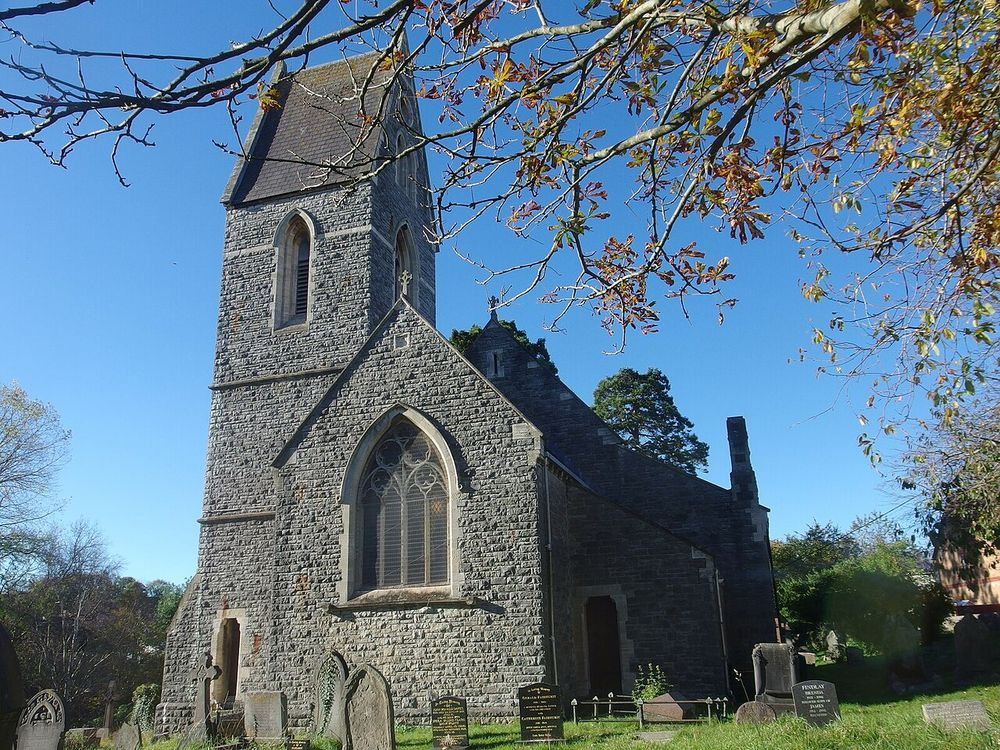
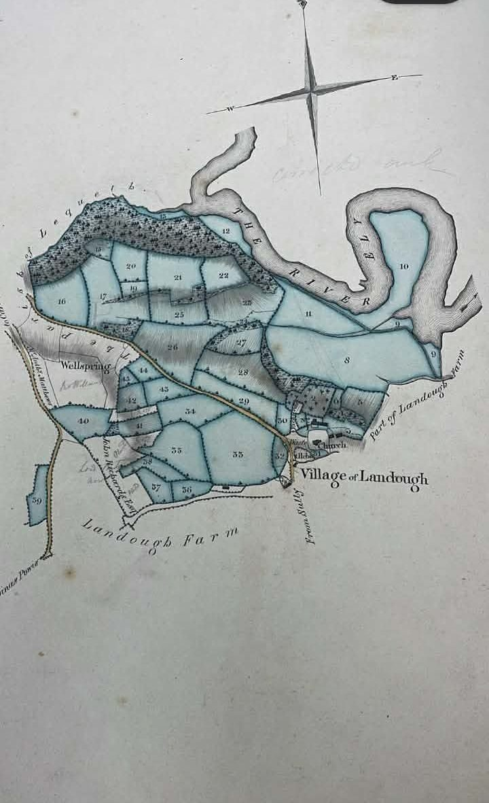

The Places¶
The farm stood beside St Dochdwy’s Church in Llandough, on the eastern slope of the Leckwith ridge above the River Ely. The features below carry the Cedwyn and Cydfin names, or frame the farm in the records. Grid references are Ordnance Survey National Grid; those taken from the List of Historic Place Names of Wales (RCAHMW) record the OS 2nd edition of 1898–1908.

St Dochdwy’s Church, Llandough. The farmhouse stood immediately north of the church until 1988. Photo: Colin Cheesman, Geograph 7023967, CC BY-SA 2.0 (via Wikimedia Commons).¶
Map list¶
Name |
Grid reference |
Parish |
Source |
Grade |
|---|---|---|---|---|
Great House Farm / Tŷ Mawr (site) |
ST 16707 73350 (approx.) |
Llandough |
Coflein NPRN 20182, as recorded on the Legal Wiki page “Llandough (Penarth) — Cydfin / Tŷ Mawr” |
DOCUMENTED |
Cwm Cydfin (Cwm Cedwyn) |
ST 16088 74023 |
Leckwith |
OS 2nd edition via RCAHMW place-names; Baring-Gould & Fisher (1908) vol. II p. 98 |
CORROBORATED |
Nant Cydfin (Nant Cedwyn) |
ST 16047 74230 |
Leckwith |
OS 2nd edition via RCAHMW place-names; Baring-Gould & Fisher (1908) vol. II p. 98 |
CORROBORATED |
Cwm Cydfin SSSI 0524 |
ST 165 739 (centre); 5.36 ha |
Leckwith |
NRW citation and boundary record, notified 1972, re-notified 9 Dec. 1985 (Legal Wiki EV-0218) |
DOCUMENTED |
Cwm Cydfin Wood |
not stated |
Leckwith and Llandough |
Bute coppice-wood sale, 29 Nov. 1902, Glamorgan Archives DSA/12/1003 |
DOCUMENTED |
Llandough Moors |
ST 16903 73523 |
Llandough |
OS 2nd edition via RCAHMW place-names |
DOCUMENTED |
Cogan Pill |
ST 17349 72779 |
Llandough |
OS 2nd edition via RCAHMW place-names; Bute D 219 (“Upper Cogan Pill”, 1790) |
DOCUMENTED |
Coed y Ddylluan (White Farm Wood) |
ST 14396 73853 |
Leckwith |
OS 2nd edition via RCAHMW place-names; DSA/12/1003 (1902) |
DOCUMENTED |
Brynwell |
ST 14569 74413 |
Leckwith |
OS 2nd edition via RCAHMW place-names |
DOCUMENTED |
Ynys-Cedwyn / Ynyscedwyn |
SN 77915 09557 |
Ystradgynlais Lower (Brecknockshire) |
OS 2nd edition and A Study of Breconshire Place Names (c. 1814–20) via RCAHMW; Peniarth MS 118 fo. 835 |
CORROBORATED |
St Cedwyn’s Church, Llangedwyn |
SJ 18860 24129 |
Llangedwyn (Denbighshire, now Powys) |
OS 2nd edition via RCAHMW place-names |
DOCUMENTED |
The farm’s neighbours in the Bute leases¶
DOCUMENTED The Bute catalogue for Llandough (NLW D 219, 1552–1829) lists, beside “Cydfin Farm or Ty Mawr Farm (107 a.)”, the holdings of Upper Cogan Pill with its fishery (1790), Llandough Farm (166 a.), Cogan Pill Farm (153 a.), Corners Well (107 a.), Lower Cogan Pill (24 a.), Green Sayes (71 a.) and Cogan Farm (320 a.), “all in p. llandough”. Llandough Farm is a separate holding and is not Tŷ Mawr (Legal Wiki EV-0211, EV-0228).
The 1824 plan¶

David Stewart’s 1824 survey of the Bute estates, plan 19, “Cedfin or Ty Mawr Farm”, photographed by the family at Glamorgan Archives (DB/E/1). From the Legal Wiki media library (EV-0004, EV-0211).¶
DOCUMENTED The plan’s reference table gives a total of 139a 3r 8p, including 20a 2r 35p of wood, with John Gedrick (reading) as tenant and “late Thos. Williams” land added. The plan shows the River Ely, the village of Llandough, Llandough Farm and a spring marked “Wellspring” (Legal Wiki EV-0211). The field names on the plan are not yet read.
DOCUMENTED In the tithe apportionment for Landough, Cogan and Leckwith (c. 1841), John Williams occupied 36 parcels (119a 2r 30p): 33 owned by the Marquess of Bute, six of them noted as in Leckwith, and three glebe parcels. Only two parcels carry names in the index: no. 209 “Courtyard &c” and no. 196 “Cottage & garden” (Legal Wiki EV-0215). A parcel-by-parcel match with the 1824 plan has not been made.
Field names¶
SOURCE PENDING The 1547 lease names the farm’s fields (NLW L 11: “fields named”), but the names have not been read. The tithe index gives almost no field names for John Williams’s parcels, and the 1824 plan’s field names are unread. These three sources are the place to find any field called after Cedwyn or Cydfin.